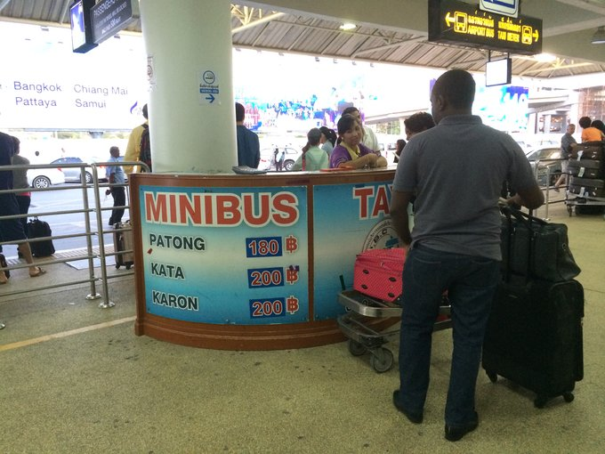
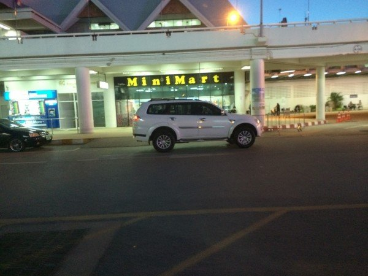
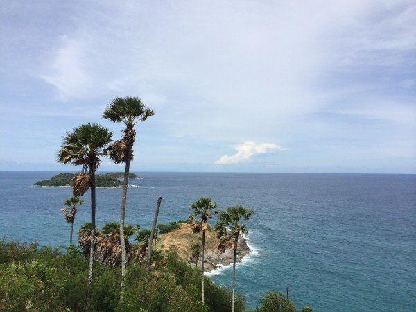
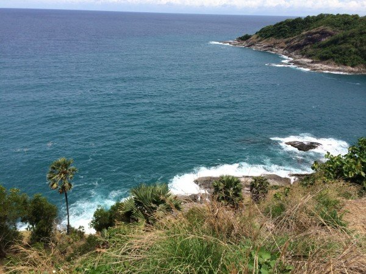
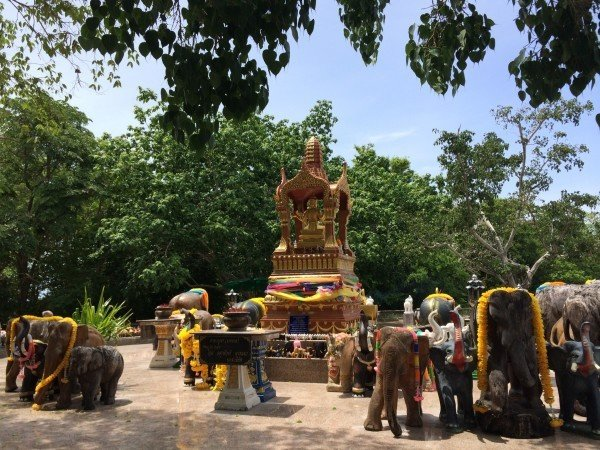
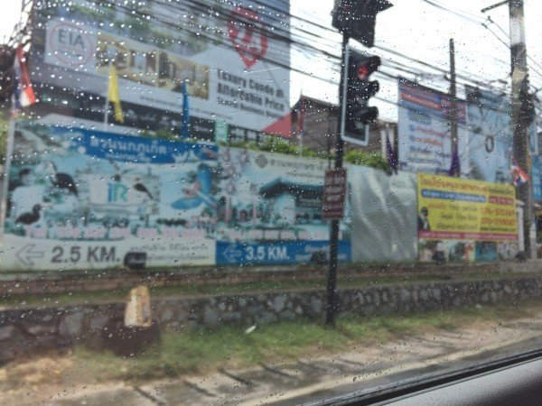
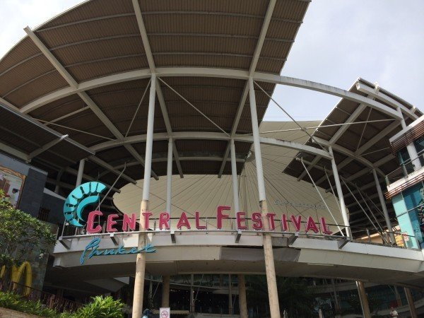

普吉岛的班车真的极其落后，班次时间相隔1个多小时，而且太早没有，太晚也没有，是最不推荐的一个选择！150铢一人。除了便宜，没有任何优势，但事实上，便宜也不是它的优势，所以小伙伴还是放弃班车吧！
 个人觉得这个是挺方便的，淘宝上有很多，价格都差不多，比现场叫taxi便宜很多！如果是多人出行，选这个最好。我第一次去普吉就是提前预订的。出机场左转立马就会看到很多国内淘宝店的牌子，或是举着写着你名字拼音的A4大小的纸片，找到那个人就等于找到了车。
神仙半岛是普吉岛的最南端，在那里看日落最好了，但是因为我去的那几天都看不到日落，加上我报的一日游都是看日落的，所以我还是避开日落吧。因为听说一到日落时分，神仙半岛附近就会堵车严重，很多泰国当地人都会早早去那边找个好位置等日落。
 财哥说，从芭东海滩到神仙半岛大概是需要40分钟。虽然我们是从卡塔过去的，但我看地图我们却是绕回到卡伦和卡塔之前的那条路开到普吉岛的另一边再到最南端的神仙半岛。我机智的发现了这一点（原谅我是个没有安全感要时时看地图掌握方位的人），财哥说是因为卡塔海滩直接去神仙半岛的那条路太难走，弯道很多，更费时。他说从机场去芭东也是，如果是走沿西海岸的那条路，客人一定会一路吐，因为很多弯道。
 